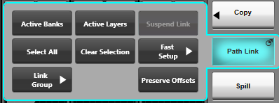
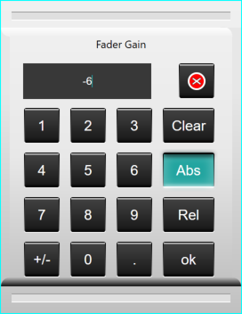
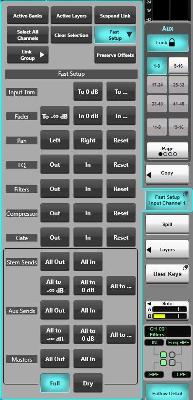
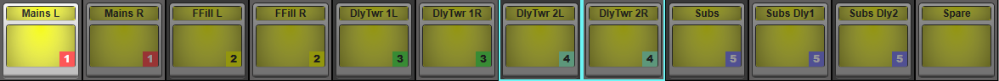
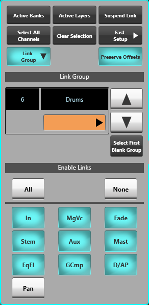

Temporary Path Linking
Control parameters can be linked across multiple paths in real time, while maintaining relative offsets.
To set up Path Linking go to the Channel View and tap Path Link to the right of the screen.
Now select the paths to link by tapping their Eyeconix or central context window area on the screen or using their SELECT buttons on the Fader Tiles. These paths are now in the link.
The first path selected with become the console's Selected path (indicated by a white border around the path in Channel View), appearing in the Detail View (if visible) and on the Focus Fader (if not locked to another path).
All path types are compatible with Path Linking including Matrix channels and VCAs.
Note: Only paths of the same type can be linked; Channels cannot be linked with Stems, fully processed Auxes cannot be linked with Dry Auxes etc. Tip: Use Range Select to quickly select multiple paths from the Fader Tiles. Hold down the SELECT button of the first path, then tap the SELECT button of the last path in the range. Now release both buttons. This can also be done across neighbouring Fader Tiles.Range Select also works on the Channel View and Overview pages; click on the first path, hold down the Shift key on a connected keyboard then click the last path to link all paths of the same type between the two.
Once the paths have been added to the link, adjust a parameter on one path in the link and the other linked paths will update accordingly. These are relative changes.
|
Press & hold the Path Link button to open a popout with a series of multi-select options:
|
 |
To activate these options, engage them at any time. For example, if there are two full input channels in the link, and Select All Channels is pressed, all of the full input channels will be added to the link.
Tapping Clear Selection will clear the current link. Engaging Suspend will temporarily deactivate the link, disengage to reactivate.
Press & hold Path Link again to toggle the popout but retain the link.
When all adjustments have been made to the linked paths, tap Path Link to clear the link (and close the popout if opened).
Preserving Offsets
By default, relative offsets between paths in a linked group are not retained when paths reach their maximum and minimum values. As of Live v6.2, inside the Path Link popout is a button, Preserve Offsets, which can change this behaviour.
When Preserve Offsets is enabled, the console will stop increasing or decreasing all linked parameter values when any one of them reaches its limit. This setting applies globally, to temporary Path Links, as well as Link Groups (see below).
If it's necessary to retain relative offsets between paths when Preserve Offsets is off, the lowest positioned path can be used to fade down parameters, and likewise the highest positioned path can be used to fade up.
Fast Setup
|
The Path Link popout also contains a Fast Setup button. This expands the popout to show additional controls for quickly setting parameters of the selected path(s). Fast Setup is applied to a single Selected path, but can be used in conjunction with Path Link to make changes to multiple paths simultaneously. Caution: Fast Setup can be used to adjust one or more levels by large amounts. Use care when using this feature!The following actions can be performed:
* The To ... buttons open a keypad into which a value can be entered and applied in one of two ways when used in conjunction with Path Link:
 ** Use the Full and Dry buttons to switch the bus sends section between Full and Dry sends. |
 |
Permanently Linking Paths
|
As of Live v6.2, persistent groups of paths can be created in the same way as Path Links. Known as Link Groups, they are a way of linking the parameters of a set of paths, applying filters where parameters are specified to remain separate. |
|
|
 |
|
Creating GroupsTo create a Link Group, press and hold Path Link and expand the Link Group section. Select the paths that should be included in the Link Group in the same way as for temporary Path Linking. The Link Groups GUI will show which number group is currently being edited. Each group can have a name and a colour. Double tapping the name field allows it to be edited. Pressing the colour will open a dropdown where the group's colour can be changed. Navigating GroupsUse the arrows in the popout to navigate between the different groups. A total of 48 groups are available. Alternatively, a double tap on the group number will open a keyboard and allow direct navigation to a desired group. The Select First Blank Group button will automatically find the first group that contains no paths. Parameter FilteringThe Enable Links section of the popout displays the collections of parameters that can be linked across the paths in the group. All will enable all possible links. None will deselect all groups and leave nothing linked. Here is a list of the linkable sections:
No changes to groups need confirming, simply close the popout when all desired settings and filters have been set up. |
 |
Useful Links
CopyIndex and Glossary